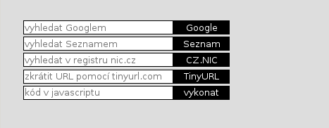

Soutěž v programování – 28. ročník
Krajské kolo 2014/2015
Úlohy můžete řešit v libovolném pořadí a samozřejmě je nemusíte vyřešit všechny. Počet bodů za každou úlohu je uveden přímo v jejím zadání. Hodnotí se shoda se zadáním, funkčnost, dodržování webových standardů a přehlednost zdrojového kódu.
Na řešení úloh máte 4 hodiny čistého času.
Před zahájením soutěže vám pořadatel
oznámí, kde najdete testovací soubory a kam máte ukládat řešení
úloh. Kompletní rešení každé úlohy (soubory HTML, CSS, obrázky,
případně Javascript) uložte do samostatného podadresáře nazvaného
jménem úlohy (např.
Při zápisu HTML a CSS kódu dodržujte webové standardy. Součást hodnocení vašich řešení je i kontrola zdrojových kódů pomocí validátorů. Doporučujeme používat HTML5, ale můžete použít i starší verze – HTML4 nebo XHTML1.
Při řešení je povoleno používat knihovnu jQuery bez pluginů. Další obdobné frameworky pouze po schválení porotou.
max. 10 bodů
Vytvořte stránku, která bude vypadat jako následující obrázek:
Dbejte na oddělení vizuální prezentace (CSS) od struktury stránky (HTML).
Stránka by měla reagovat na akce uživatele tímto způsobem:
Vytvořte novou stránku index2.html, která se bude od předchozí lišit tím, že obsahuje pouze jediné společné vstupní pole, vedle něhož je jedno tlačítko pro každou službu. Zadaný text se odešle na příslušnou službu podle toho, které tlačítko uživatel zmáčkne. Nezapomeňte odevzdat obě stránky (tj. verzi s více poli v index.html i verzi s jedním polem v index2.html).
max. 30 bodů
Vyrobte HTML stránku, která zobrazuje tabulkový kalendář pro aktuální měsíc. Každý den je představován jedním políčkem kalendáře, ve kterém je zapsáno číslo daného dne v měsíci. Každému týdnu přísluší jeden řádek kalendáře. Týden začíná pondělím. Pokud měsíc nezačíná v pondělí, jsou příslušná políčka na začátku měsíce prázdná; obdobně pro konec měsíce.
Kalendář nastylujte pomocí CSS v samostatném souboru tak, aby:
Při tisku vypadá kalendář takto:
Následně kalendář „oživte“. Zobrazte nad ním formulář pro výběr měsíce a roku a šipky vpřed a vzad. Šipky přecházejí na předchozí/následující měsíc. Po načtení stránky je zobrazen aktuální měsíc. Kalendář nemusí umět data starší než 1 1. 1970 a novější než 31. 12. 2199.
Připomínáme, že použití cizího kódu mimo předem porotou schválených knihoven není dovoleno. Například použití holé knihovny jQuery je povoleno, ale pro řešení této úlohy není možné použít knihovnu jQuery UI a její komponentu datepicker.
Státní svátky zobrazte stejně jako neděli. Pro účely této úlohy za státní svátky považujte dny: 1. 1., 1. 5., 8. 5., 5. 7., 6. 7., 28. 9., 28. 10., 17. 11. a 24.–26. 12. Předpokládejte, že státní svátky jsou každý rok stejné. Bod navíc dostanete, pokud správně zobrazíte i Velikonoční pondělí; pro jeho výpočet použijte algoritmus popsaný na české Wikipedii: http://cs.wikipedia.org/wiki/Výpočet_data_Velikonoc
Kliknutím na políčko kalendáře se daný den „vybere“:
Při zmenšení šířky okna tak, že by měsíční kalendář už měl příliš malá políčka a byl tudíž nečitelný (přesný okamžik si určete sami), se kalendář změní na týdenní. Jednotlivé dny jsou zapsány pod sebou, políčka mají obdélníkový tvar a zabírají většinu či celou šířku okna. Jinak má týdenní kalendář podobný vzhled jako měsíční včetně např. formátování nedělí a obdobnou funkčnost, tedy listování po týdnech, možnost výběru dne, atd.
Přepínat měsíce (a týdny) lze i tažením myší (představte si listování kalendářem na tabletu nebo mobilním telefonu). Přepnout měsíc stačí až poté, co uživatel pustí tlačítko myši, není tedy nezbytně potřeba, aby se kalendář posouval plynule během tažení myší. Plynulé posouvání však bude ohodnoceno extra body.